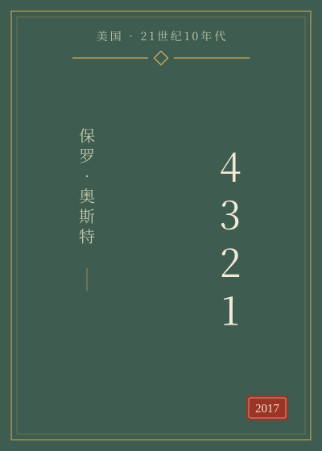
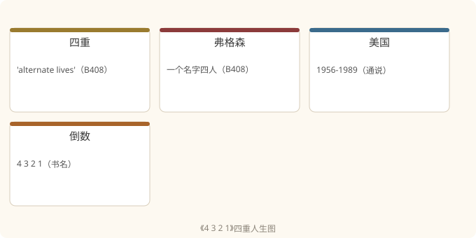

4 3 2 1
一、基本信息
| 作者 | 保罗·奥斯特 |
|---|---|
| 成书/出版 | 2017年（Britannica B408：4 3 2 1 (2017)——七年首部长篇——主角 Archie Ferguson 'experiences four alternate lives'） Paul Auster — Encyclopaedia Britannica（百科全书） |
| 国别/地区 | 美国 |
| 时代 | 现当代 · 21世纪10年代 |
| 体裁 | 长篇小说 |
| 语言 | 英语 |

《4 3 2 1》四重人生图（主题·结构图）
二、创作背景
Britannica（B408）：4 3 2 1——七年首部长篇——主角 Archie Ferguson 'experiences four alternate lives'（经历四种平行人生）。
Britannica（B408）：奥斯特——'often concerned with the search for identity and personal meaning'。
题材（通说待核）：弗格森的四条人生线：1956-1989的美国编年。
三、内容脉络
（通说待核）弗格森的四重人生：记者/翻译/革命者/影评人（版本通说待核）。
（通说待核）'四三二一'的倒数结构。
四、主要人物表
| 人物 | 身份 | 说明 |
|---|---|---|
| 阿奇·弗格森 | 四重主角 | （B408：Archie Ferguson） |
五、主题与艺术特点
- '四种平行人生'（B408：four alternate lives）。
- 美国编年（1956-1989——通说待核）。
- '身份'的复数（B408 交叉）。
六、影响与评论
- Britannica：'experiences four alternate lives'（B408）。
Paul Auster — Encyclopaedia Britannica（百科全书） - Britannica：'七年首部长篇'（B408）。
Paul Auster — Encyclopaedia Britannica（百科全书）
七、阅读建议
难点
- 四线的平行结构。
- 美国60-80年代编年。
- 《4 3 2 1》中译本（人民文学等——通说待核）。
- 英文原版。
奥斯特收官之作；与《纽约三部曲》对读。
八、待核实
- 四线职业细节核对（通说）。
- 2017年出版（Henry Holt说）待核。
- '弗格森'名核对（B408已载）。